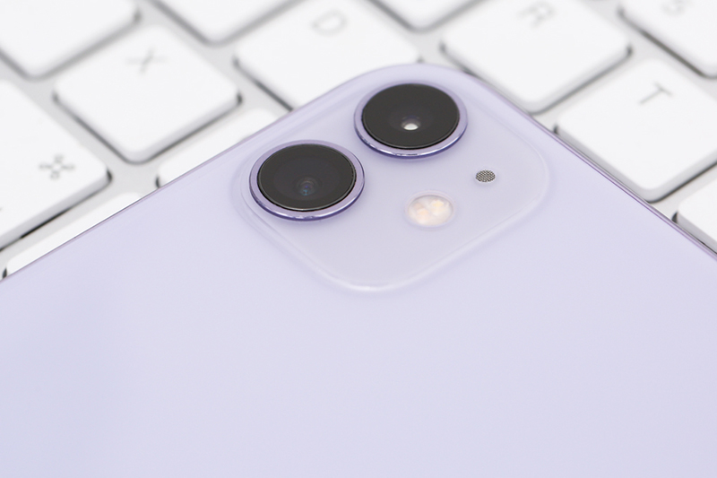

Giá niêm yết: 16.990.000₫
Thông tin sản phẩm
Apple đã chính thức trình làng bộ 3 siêu phẩm iPhone 11, trong đó phiên bản iPhone 11 64GB có mức giá rẻ nhất nhưng vẫn được nâng cấp mạnh mẽ như iPhone Xr ra mắt trước đó.
Nâng cấp mạnh mẽ về camera
Nói về nâng cấp thì camera chính là điểm có nhiều cải tiến nhất trên thế hệ iPhone mới.

Nếu như trước đây iPhone Xr chỉ có một camera thì nay với iPhone 11 chúng ta sẽ có tới hai camera ở mặt sau.
Ngoài camera chính vẫn có độ phân giải 12 MP thì chúng ta sẽ có thêm một camera góc siêu rộng và cũng với độ phân giải tương tự.
Ảnh chụp chân dung với iPhone 11
Theo Apple thì việc chuyển đổi qua lại giữa hai ống kính thì sẽ không làm thay đổi màu sắc của bức ảnh.
Ảnh chụp chân dung với iPhone 11
Đây là một điều được xem là bước ngoặt bởi những chiếc smartphone Android có nhiều camera hiện nay sẽ thường bị sai lệch về màu sắc khi chuyển đổi qua lại giữa các ống kính gây cảm giác khá khó chịu cho người dùng.
Ảnh chụp với Deep Fusion
Bên cạnh đó với iPhone 11 thì đây sẽ là lần đầu tiên Apple trang bị khả năng chụp đêm lên chiếc iPhone của mình.
Ảnh chụp với chế độ Night Mode
Theo trải nghiệm thì tính năng này hoạt động rất hiệu quả đặc biệt trong những môi trường cực kỳ thiếu sáng.
Kích hoạt chế độ chụp đêm sẽ do iPhone tự quyết định việc của bạn chỉ cần đưa máy lên và chụp, rất đơn giản.
Với chừng đó tính năng, chừng đó cải tiến thì chiếc iPhone 11 này tự tin sẽ là một đối thủ đáng gờm với những chiếc flagship đến từ các hãng Android đang có mặt trên thị trường.